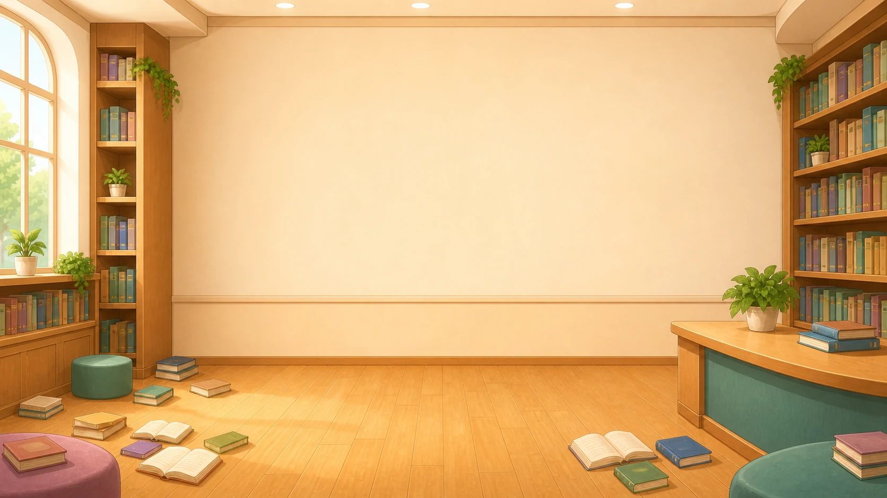
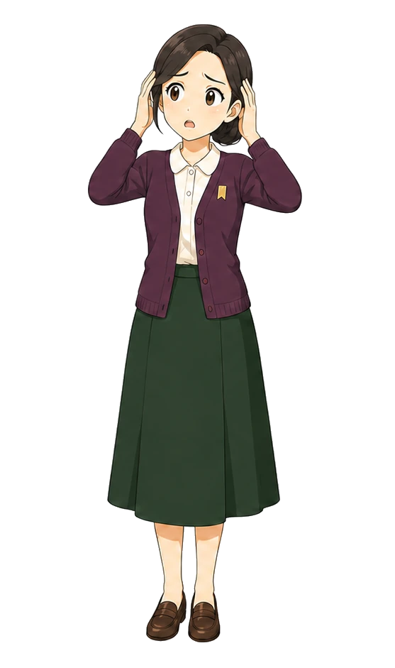
큰일 났어! 도서관 시계가 고장 나서 시간이 뒤죽박죽이야! 당장 독서 교실을 시작해야 하는데 언제인지 알 수가 없어. 누가 좀 도와주세요!
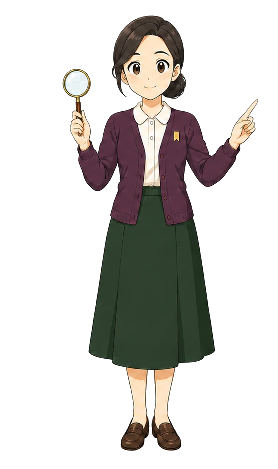
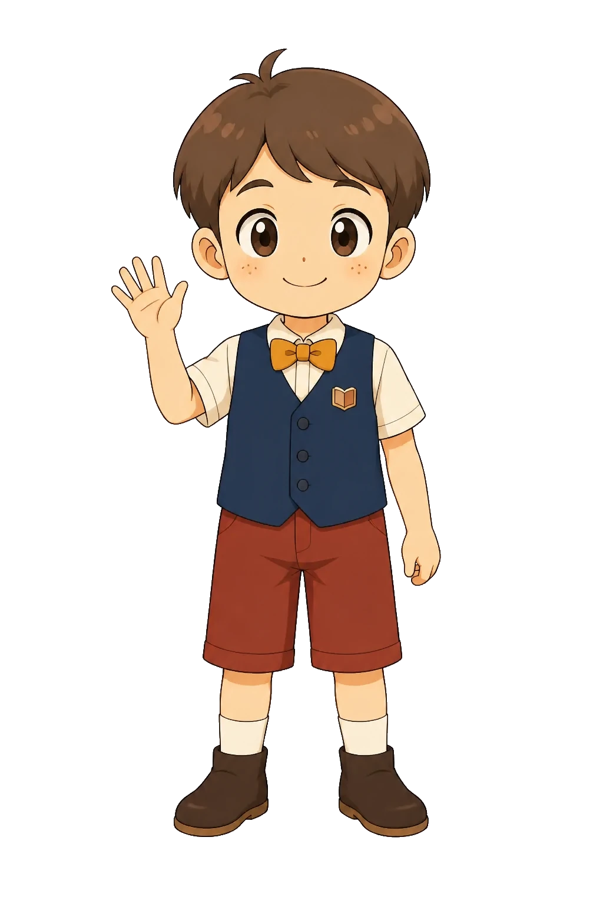
걱정 마세요! 시계 보는 법을 잘 아는 제가 도와드릴게요!
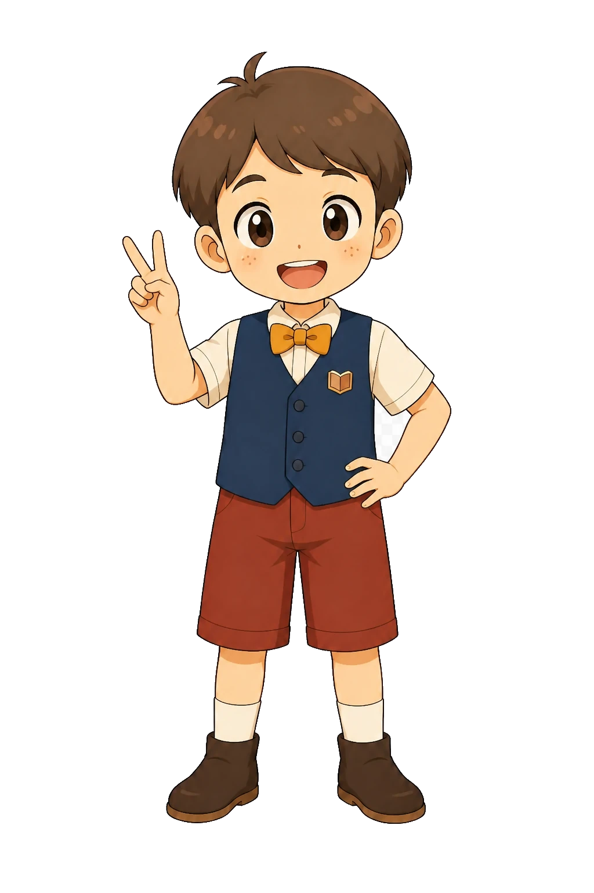
[3시]
와, 정답이야! 시계를 아주 잘 보는구나. 고마워, 덕분에 첫 번째 시계를 고쳤어. 이제부터 우리 도서관을 수학으로 구해줄거라 믿어!!
[STEP 2. 수리로 해결해요]
전광판의 시간이 다 깨져버렸어. '몇 분 전'인지 잘 읽어보고, 똑같은 시각을 가리키는 알맞은 시계를 찾아줄래?
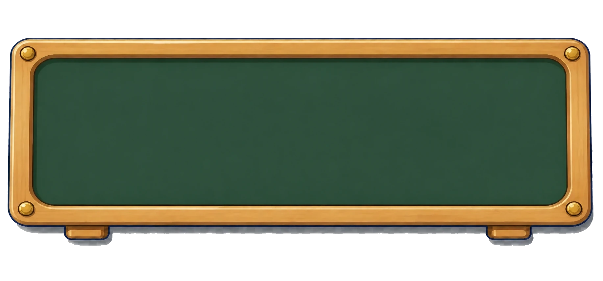
다시 생각해보세요
독서 교실 시간표가 지워져서 언제 끝나는지 알 수가 없다. 시계를 보고 걸린 시간을 계산해서 빈칸을 채워줄 수 있겠니?
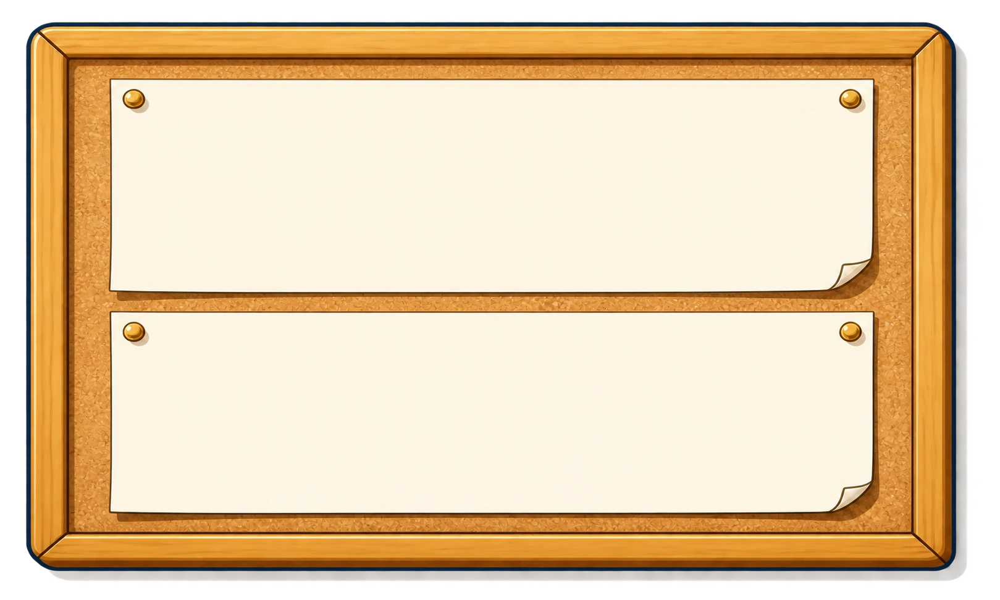
다시 생각해보세요
도서 대출 시스템을 다시 켜려면 시간의 규칙을 풀어야 해! 1일과 24시간의 관계를 잘 생각해서 블록을 알맞게 넣어주렴!
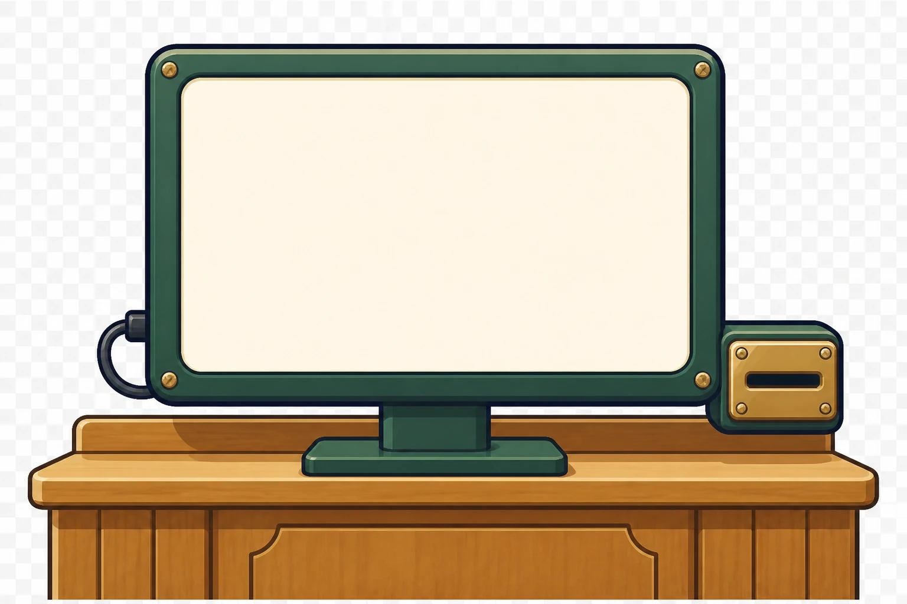
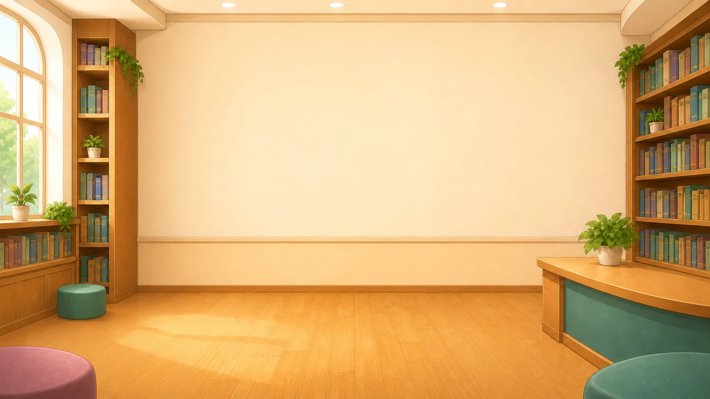
해냈다! 시간의 규칙을 모두 풀었어요!
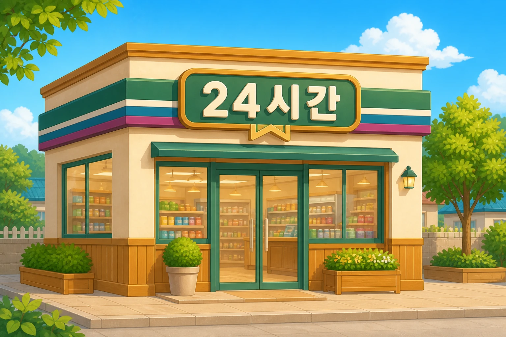
우리 동네 편의점 간판에 왜 '24'가 적혀 있을까? 1일은 24시간이기 때문에, 하루 종일 쉬지 않고 문을 연다는 뜻이란다!
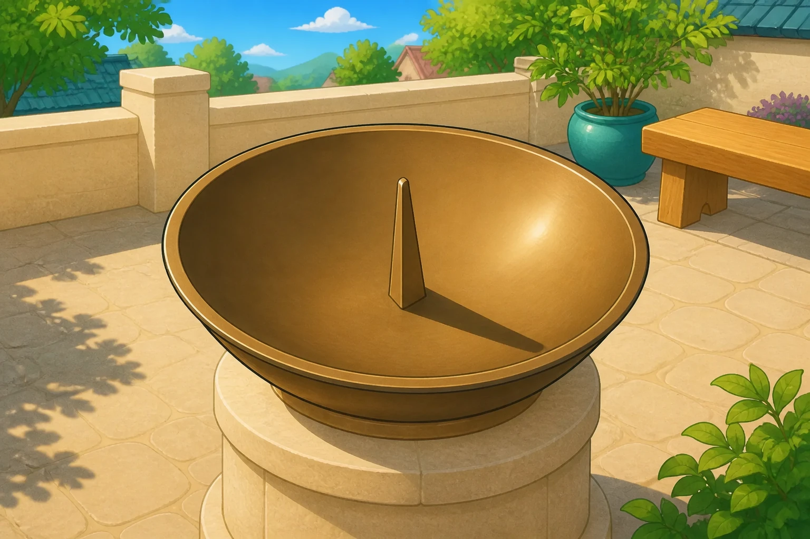
시계가 없던 아주 옛날 사람들은 어떻게 시간을 알았을까? 바로 해의 그림자가 움직이는 길이를 보고 시간을 알았어!
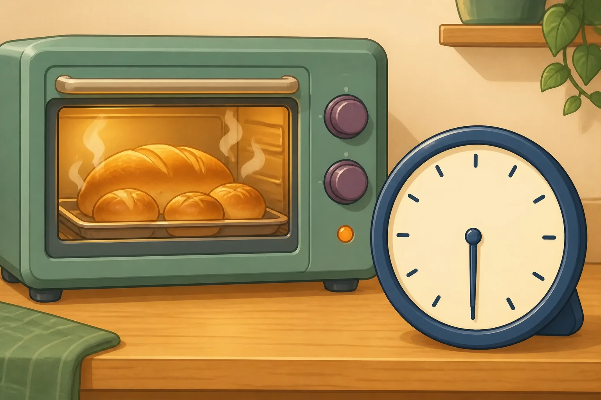
오븐에 빵을 넣고 '30분 후'에 꺼내야 해! 맛있는 요리를 할 때도, 재미있는 만화가 시작할 때까지 기다릴 때도 시간 계산이 꼭 필요하지.
그럼 하루 종일 문을 여는 도서관이 있다면, 그 도서관은 며칠 동안 문을 여는 걸까요?
맞았어! 24시간은 1일과 같지!
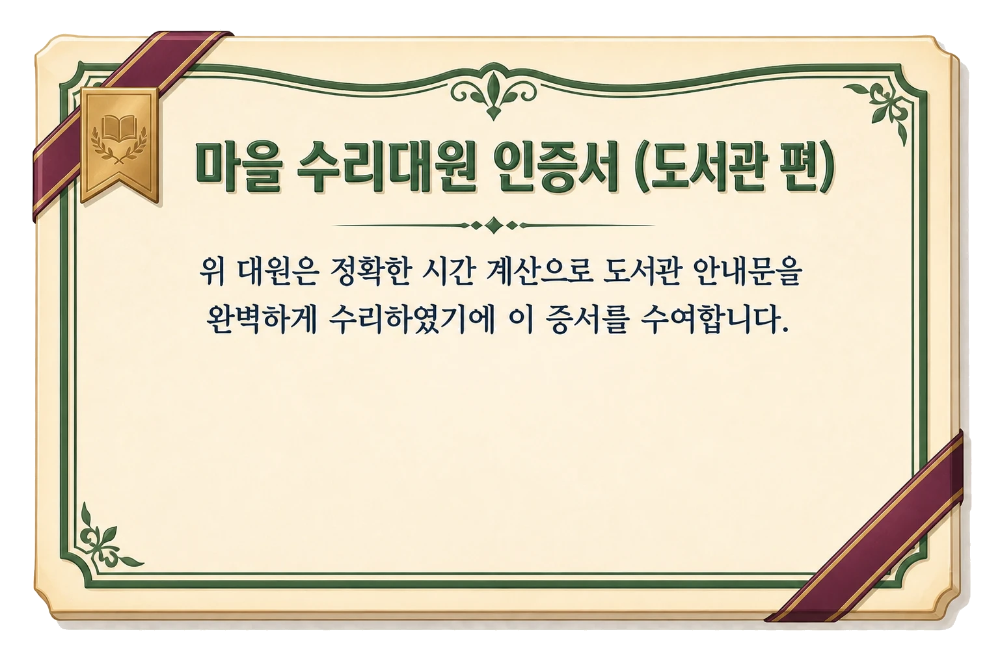
맞힌 문제 수13/13
클리어 소요 시간00:00
정말 고마워! 네 덕분에 도서관이 완벽해졌어!
언제든 제 수학실력이 필요하면 불러주세요!
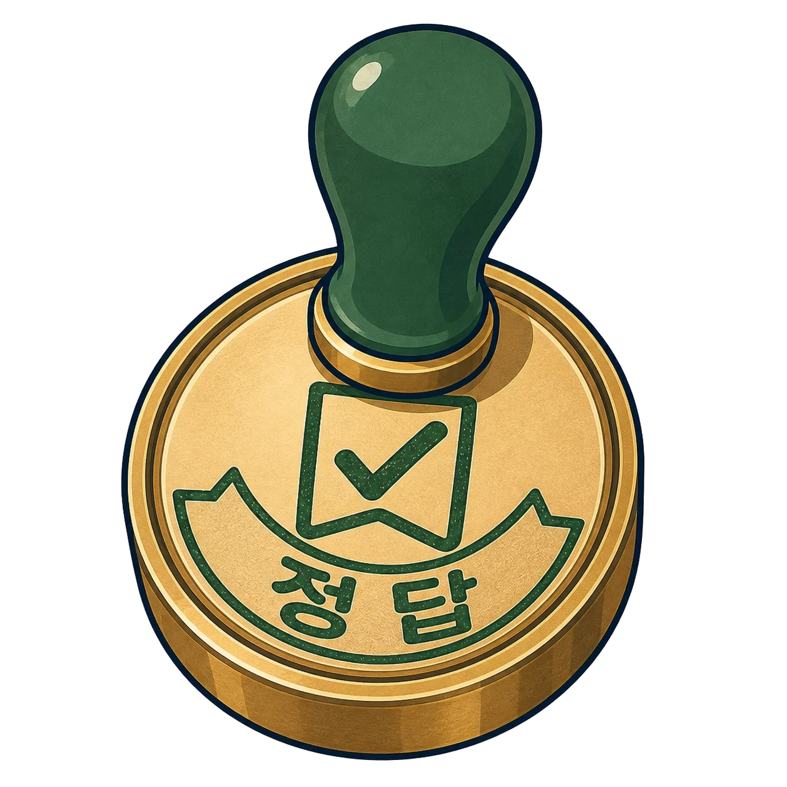